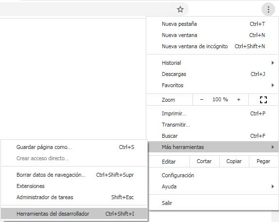
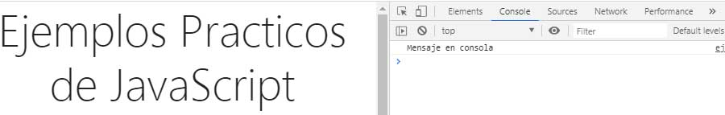

Ejemplo 07 - Usar console.log
Cuenta como una herramienta para los programadores, ayuda a visualizar la funcionalidad del código .js
La frase reservada
console.log en el lenguaje de
.JS se encarga de ejecutar el codigo y mostrarlo en la consola del navegador, más no en el navegador directamente.
Para poder abrir la consola en el navegador se deben seguir los siguientes pasos:
- Ir al menú del navegador y abrir las herramientas de desarrollador, ó hacer clic derecho en la hoja del navegador y hacer click en inspeccionar
- La pantalla se dividira en dos y se debe buscar la ficha console desde la cual se vera la ejecución del código js

Ejemplo:

Código:
<script type="text/javascript">
var mensaje = ('Mensaje en consola');
console.log(mensaje);
</script>